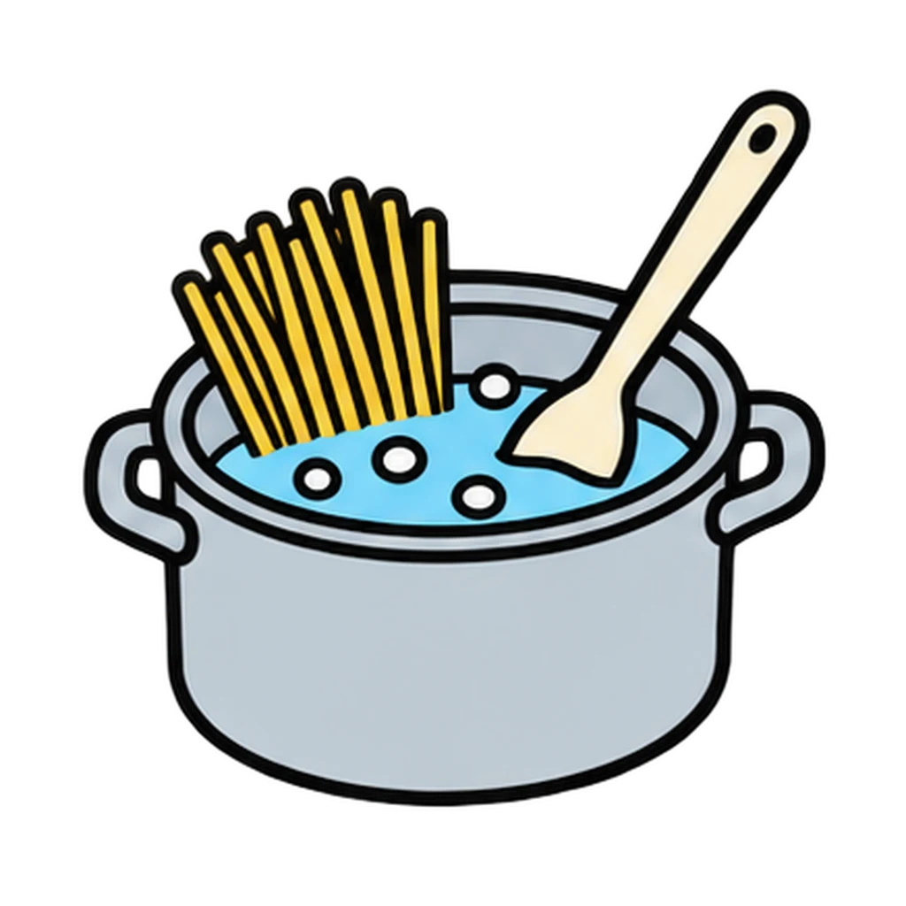
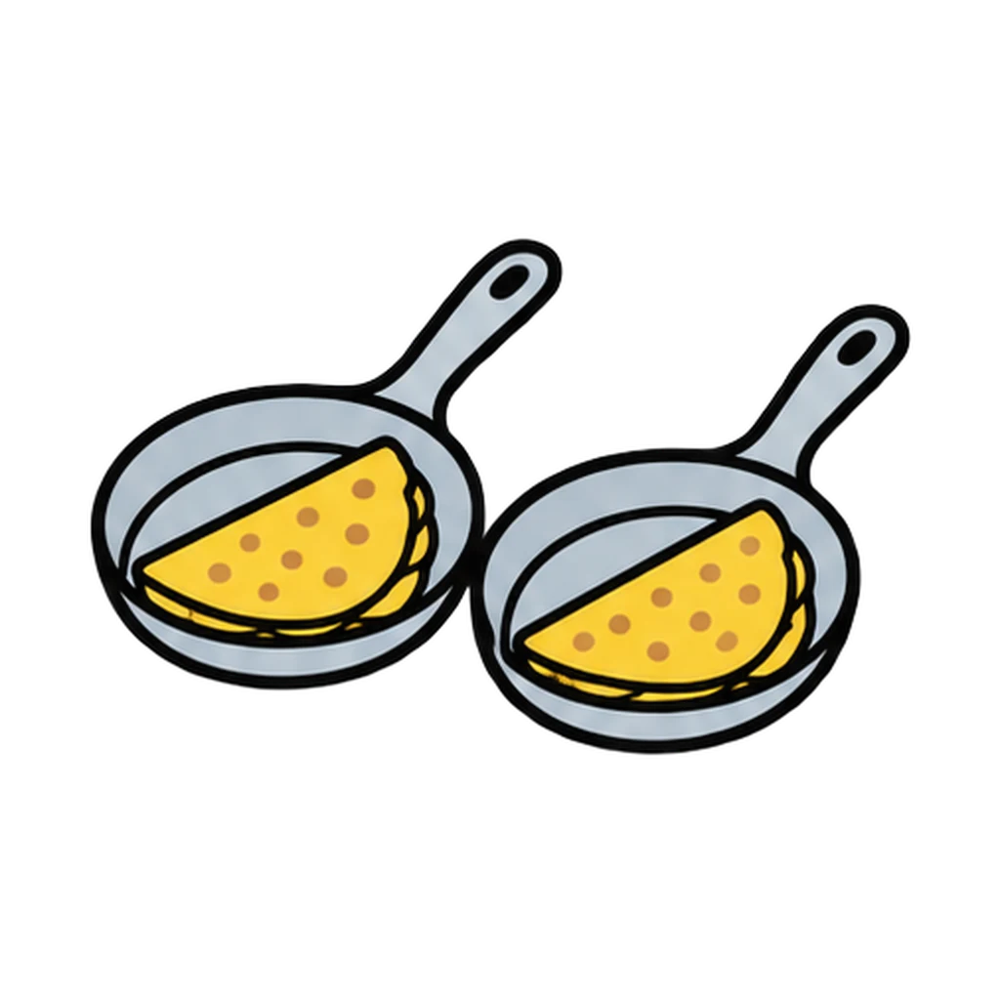

Reviews Lesson 6.8, Lesson 6.9. Reviews Lessons 6.8 and 6.9, the two labs, using the what-could-go-wrong and what-does-done-look-like tables printed on both station cards. It does not review the eight roles, which are Station Rush. Play it the day before each lab as a two-minute preview, or after the lab as the do now while the Lab Reflection gets finished, and again before the Feed the Class cook day in Lesson 6.16, where the same rules apply. Round 1 items are split pasta then quesadilla, so a class that has only done Lab 3 can stop after item 6 plus the two critical path questions. Round 2 is the fast one; the two misses that matter are small bubbles called a boil and a skillet left empty.

Kitchen Fix
A problem from the lab station card appears. Tap why it happened from four choices. Then a done-looks-like line appears, and you tap YES if that is what done looks like or NO if it is not yet.
How to play


Done
The ones to study:
Worth knowing by heart:
- The pot is on the burner by minute 3 or the period does not work.
- The teacher drains every pot and opens every oven door. Butter knives and kitchen shears are the only things that cut in this room.
- A skillet should never sit empty.